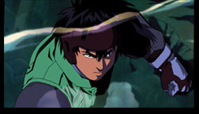
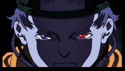
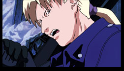
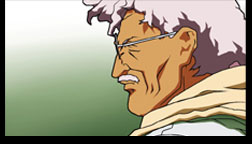
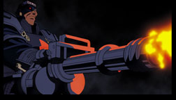
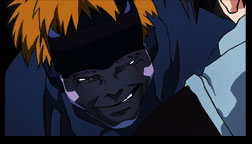

|  | Although he may seem to be just another high school student, 16 year old Ominae Yu's innocent exterior hides a dark secret and a double life. As one of ARCAM's most elite agents, the Spriggan, Yu is the best of the best. Gifted with fantastic reflexes and athletic abilities that make him an unstoppable force inside his Orihalcon battle armor, he is driven by a horrifying secret and a burning desire to obliterate evil and injustice, no matter what the cost |
|  | Freak of nature or monstrous creation of military science gone mad? Colonel MacDougall is both of these and so much more. Created within a classified lab within a rogue section of the Pentagon, he is a living weapon of unbelievable power. Although he appears to be still a child, his mind has been twisted by the forced application of advanced knowledge and the surgical modifications required to enhance the psionic portions of his brain. Coupled with the magnetic field amplifier inserted in his brain, he is the most powerful telekinetic ever known, capable of generating impenetrable force fields and able to turn a man inside out just by willing it. He is also quite certifiably insane and is held in check only by his dependence upon the Machine Corps' technical division to literally keep his skull from exploding every time he unleashes his awesome power |
|  | ARCAM's top Spriggan from France, Jean is Yu's friend, rival and mentor. A former berserker who has learned to contain his savage fury, he now seeks to guide the impetuous Yu down the course he must follow if he is to survive his dangerous life as a Spriggan |
|  | Perhaps the most brilliant mind on the planet, Dr. Meisel is ARCAM's senior scientist and the lead researcher on the NOAH project. Although he could become a millionaire many times over if he wished to sell his skills to either governments or the private sector, he instead chooses to devote himself to protecting mankind, creating brilliant inventions such as Yu's Orihalcon battle armor for the exclusive use of ARCAM |
|  | The Machine Corp‘s mechanized murder-machine, Major Fattmann possesses unbelievable strength coupled with an almost indestructible cyborg body. With a Gattling-gun embedded in his right arm and an old score to settle with Yu, it is his unquenchable thirst for revenge that first draws Yu into the battle for NOAH. |
|  | Incredibly fast and unbelievably ruthless, Little Boy is the perfect partner for Fattmann in committing the Machine Corps' atrocities. With molecule-thin wire cutters embedded in his fingers, he cuts through opposing troops as if they were made of butter, leaving still wriggling piles of dismembered corpses in his wake. There is only one thing in the universe he fears… the Spriggan |